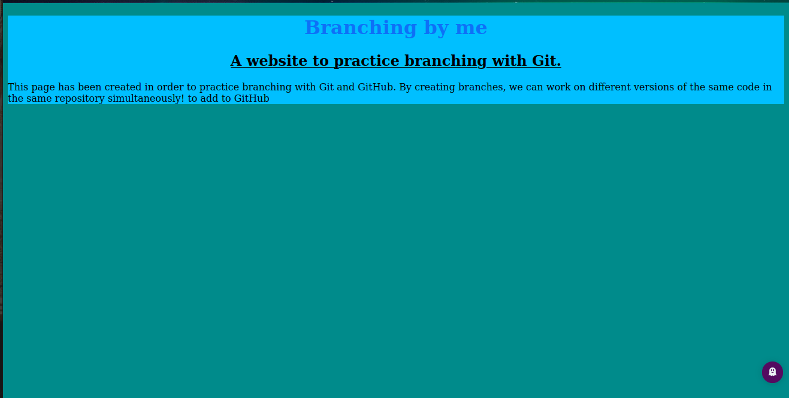

HOME
EXPLORE
ABOUT
NELSON'S PORTFOLIO
Hi,there my name is Nelson Wandui a student at Moringa
school currently taking software fundamentals (prep).
This is my first week where we covered HTML and basic GIT.
To practice what I learnt, here are a few projects that I made:
- A basic website.
- An animal adoption website.
- A photographer portfolio.
- Branching test.
This is the basic website I created it uses various tags such as you can view the site
here.

This is a branching test. I practised branching and merging using this example.
ABOUT ME
I just finished my undergraduate degree in BSc. Biotechnology from JKUAT. I took this course to try something new and learn while at it.
I like;reading fictionand non-fiction
I am very interested in technology especially A.I.